set.seed(1344)
library(fpp3)
theme_set(theme_bw())
dat <- tibble(
date = seq(as.Date("2015-01-01"), as.Date("2020-12-31"), by = "1 day"),
t = 1:length(date),
Tt = 100+9*t/300 + .5*((t-1000)/200)^3+(.87*cos(2*pi*t/1200)+.42*sin(2*pi*t/600))*11,
St = (.94*cos(2*pi*t/365) -1.2*sin(2* pi*t/365))*13,
Rt = rnorm(length(date), sd = 15),
Yt = Tt + St + Rt
)
dat <- as_tsibble(dat, index = date)Exercises
In addition to the exercises in Chapter 3.7 of the textbook, here are some additional ones with solution. Try to solve them yourself before looking at the solution. The textbook exercise solutions are published on canvas.
- Use the simulated data from here. Compare different methods with the truth from the simulation. Are there large differences?
Solution
Since the simulated data is daily, we cannot use the x11 and seats methods. We will therefore only compare the STL and classical decomposition.
We start by re-running the simulation and creating a tsibble.
Then we do the decomposition, classical and STL:
decomp <- dat %>%
model(
classic = classical_decomposition(Yt~season(period = "1 year"), type = "additive"),
stl = STL(Yt~season(period = "1 year"), robust = TRUE)
) %>% components() %>%
# For some reason, the classic and stl uses differnt naming conventions:
mutate(random = ifelse(is.na(remainder), random, remainder),
seasonal = ifelse(is.na(`season_1 year`), seasonal, `season_1 year`))
# Adjusting the names of dat to fit with the decomp
names(dat) <- c("date", "t", "trend", "seasonal", "random", "Yt")
dat$.model = "simulation"
# Classical decomposition:
decomp %>% filter(.model == "classic") %>% autoplot()+ labs(title= "Classical")Warning: Removed 728 rows containing missing values or values outside the scale range
(`geom_line()`).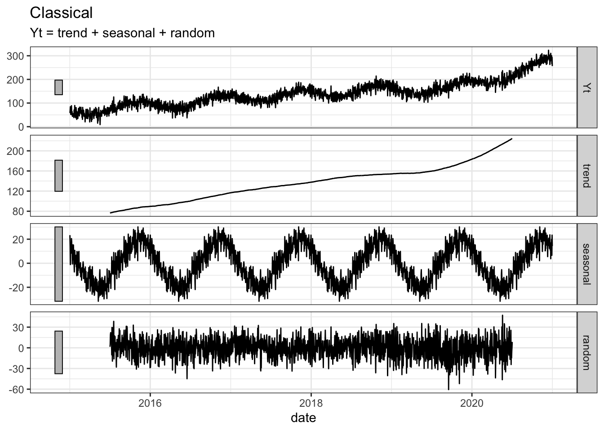
# STL:
decomp %>% filter(.model == "stl") %>% autoplot() + labs(title= "STL")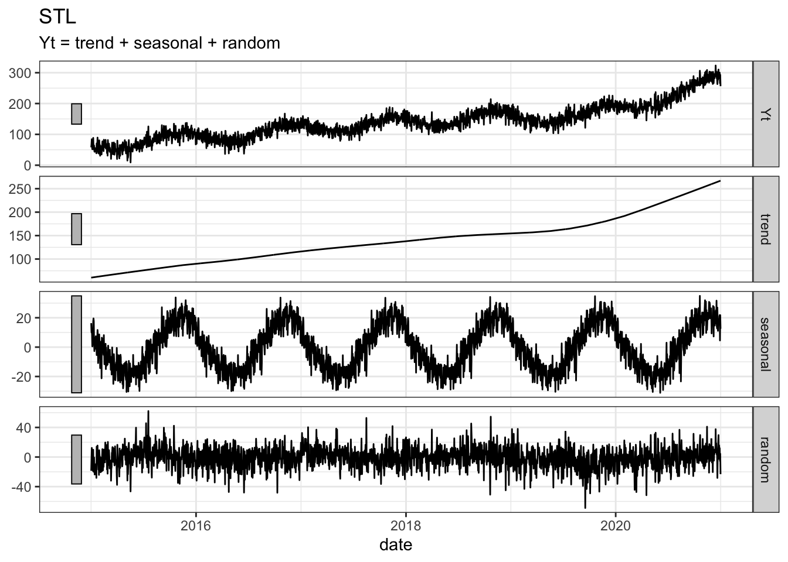
# Simulation:
decomp %>% bind_rows(dat) %>% filter(.model == "simulation") %>% autoplot()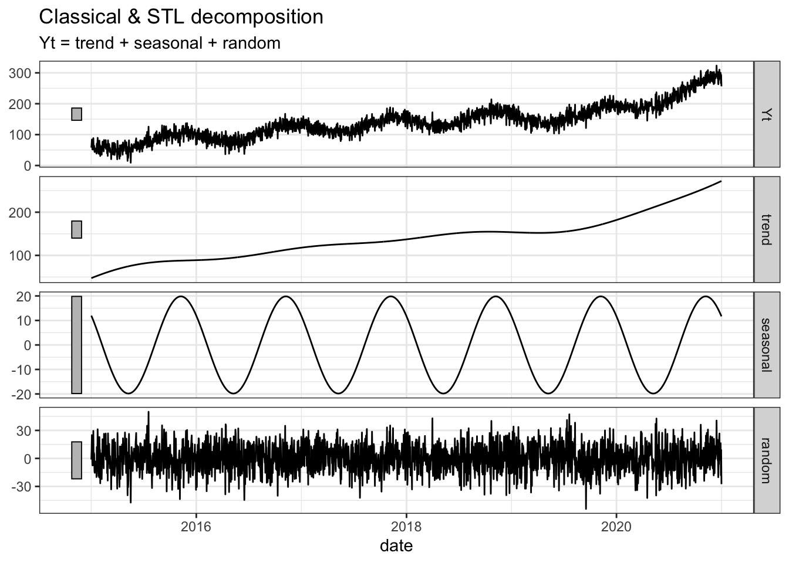
# All
decomp %>% bind_rows(dat) %>% autoplot()Warning: Removed 728 rows containing missing values or values outside the scale range
(`geom_line()`).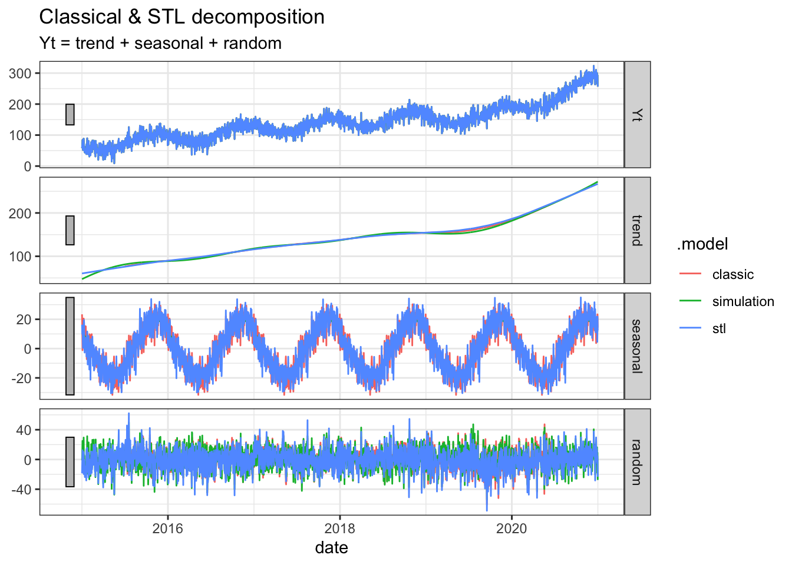
With the setting I used here, it does not seem that the decomposition methods manage to get as smooth estimate for the seasonal component as we see in the simulation, but for the trend part the fit is almost perfect.
- Use the global_economy data, select a country (e.g. Austria). Plot GDP, GDP per capita and GDP per capita inflation adjusted, GDP inflation adjusted.
Solution
library(fpp3)
library(tidyverse)
dat <- global_economy %>%
filter(Country == "Austria")
dat %>% autoplot(GDP)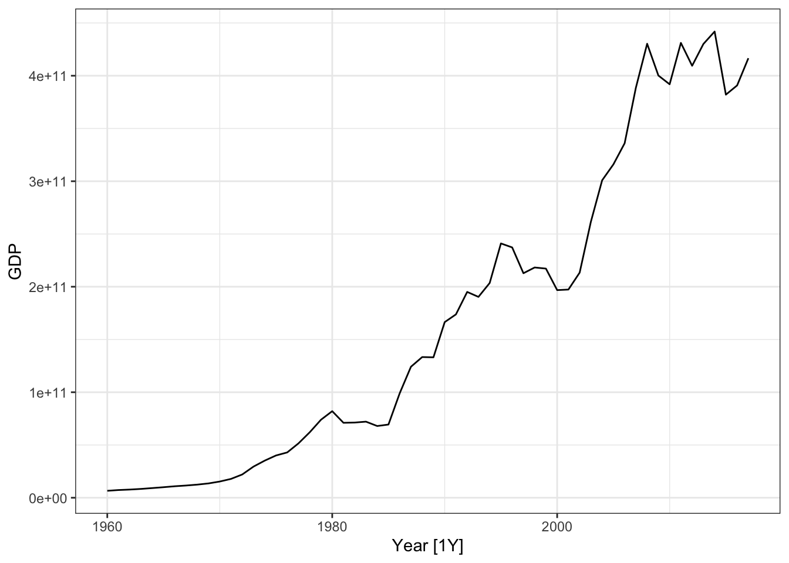
dat %>% autoplot(GDP/Population)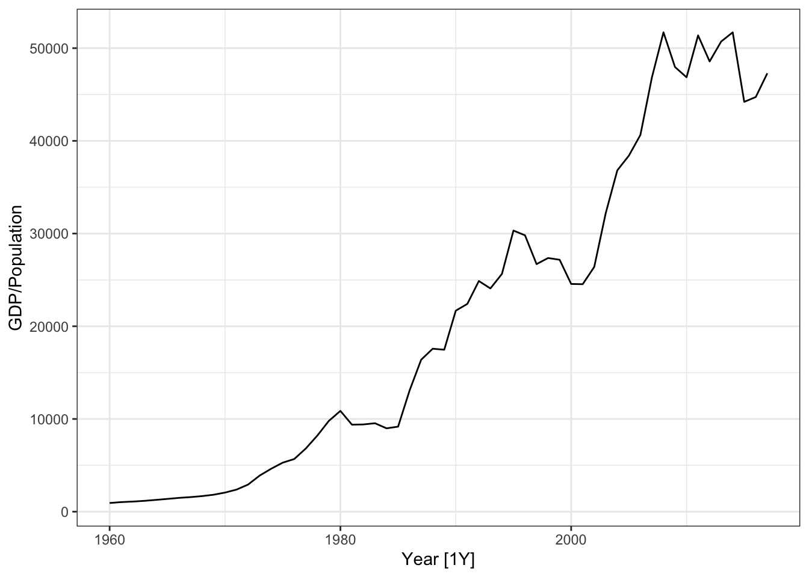
dat %>% autoplot(GDP/Population * 100/CPI)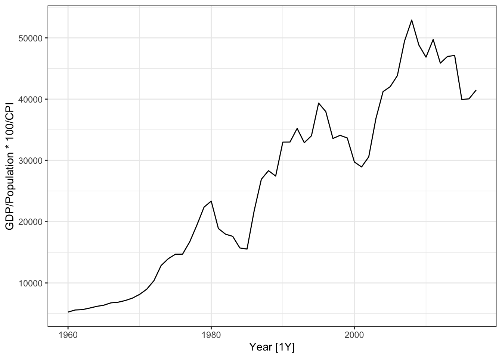
dat %>% autoplot(GDP * 100/CPI)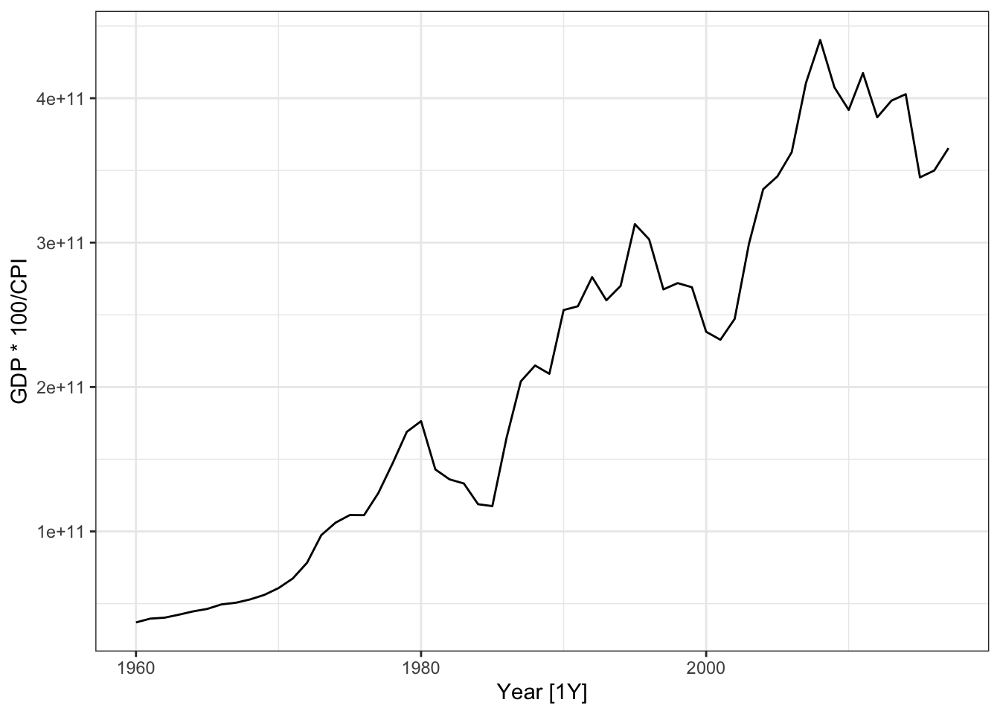
- In the global_economy data set, the CPI has a reference year of 2010. Do the necessary changes to inflation adjust GDP per capita with 1990 as reference year.
Solution
library(fpp3)
library(tidyverse)
dat <- global_economy %>%
filter(Country == "Austria")
# -- Extracting the CPI in 1990: --
cpi1990 <- dat %>% filter(Year ==1990) %>% pull(CPI)
# -- Transforming such that CPI1990 is 100 in 1990: --
dat <- dat %>% mutate(CPI1990 = CPI / cpi1990 * 100)
# -- Plotting Inflation adjusted GDP per capita: --
dat %>% autoplot(GDP/Population * 100/CPI1990) +
labs(y = "Inflation adjusted GDP per capita (1990 US$)") +
geom_line(aes(y= GDP/Population * 100/CPI), col = 2)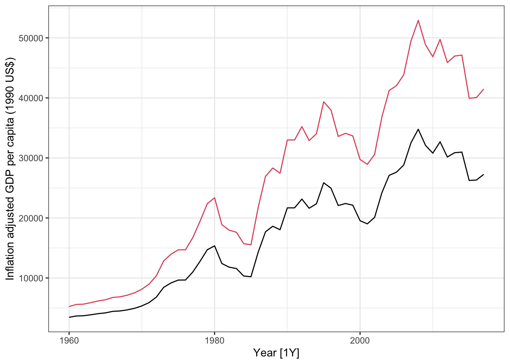
# -- Comparing the two CPIs: --
dat %>%
pivot_longer(cols = c(CPI,CPI1990)) %>%
ggplot(aes(x = Year, y = value, col = name)) + geom_line()+
geom_hline(yintercept = 100) +
scale_color_manual(values = c("red","blue"))+
geom_segment(x = 1990,xend = 1990, y = -Inf, yend =100, lty = 2, col = "blue")+
geom_segment(x = 2010,xend = 2010, y = -Inf, yend =100, lty = 2, col = "red")+
labs(title = "Differences between CPI with reference year 1990 and 2010",
y = "Consumer Price Index") +
theme(legend.title = element_blank())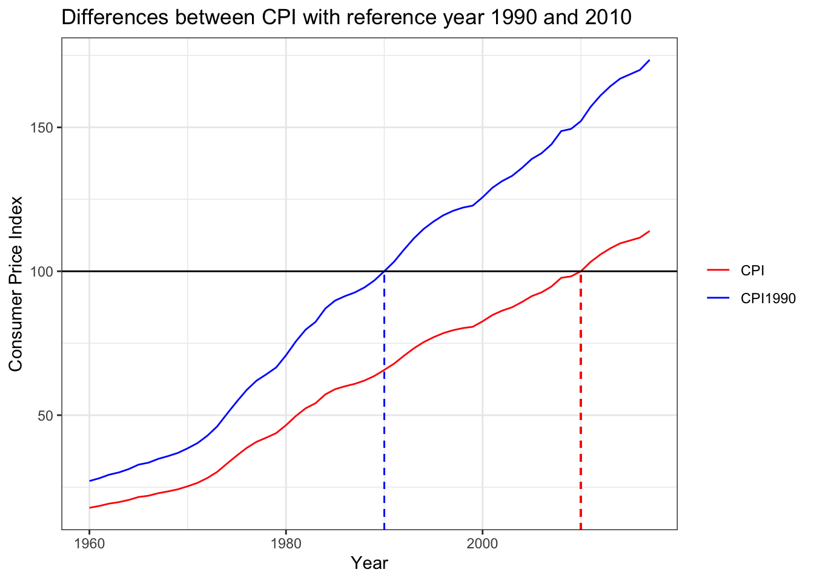
- Use the quantmod package to download data for another stock (e.g. Equinor = EQNR). What kind of transformation would you prefer for your stock?
Solution
I choose the Norwegian company Equinor.
library(quantmod)Warning: package 'quantmod' was built under R version 4.6.1Warning: package 'zoo' was built under R version 4.6.1# Equinor:
getSymbols("EQNR")[1] "EQNR"close.price <- tibble(
close = as.numeric(EQNR$EQNR.Close),
date = time(EQNR)
) %>% as_tsibble(index = date)
# -- Plot closing price: --
close.price %>% autoplot(close) +
labs(title = "Equinor Closing price",
y = "US$")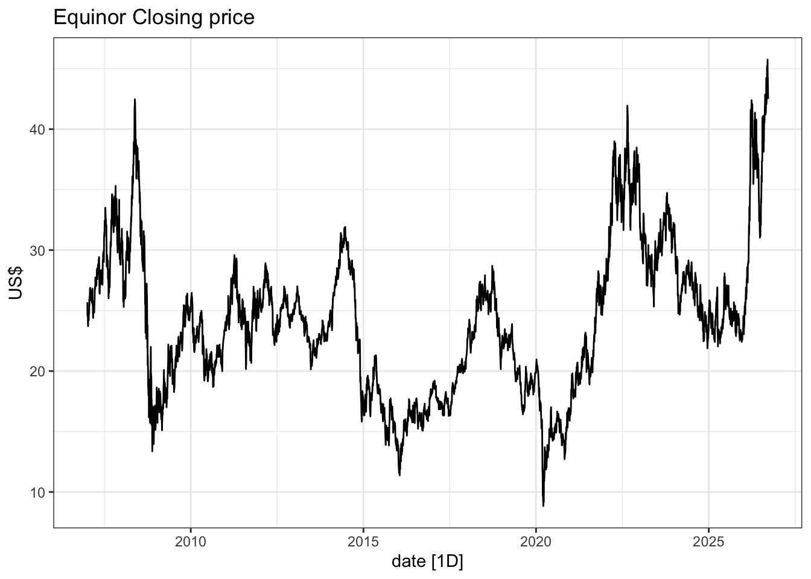
close.price <- close.price %>%
mutate(logclose = log(close), # log-transform
logreturn = c(NA, diff(logclose)), # log returns
return = c(NA, diff(close)/close[-nrow(close.price)]) # Returns
)
close.price %>%
pivot_longer(-date) %>%
ggplot(aes(x=date, y = value))+ geom_line()+
facet_wrap(~name, scales = "free_y")Warning: Removed 2 rows containing missing values or values outside the scale range
(`geom_line()`).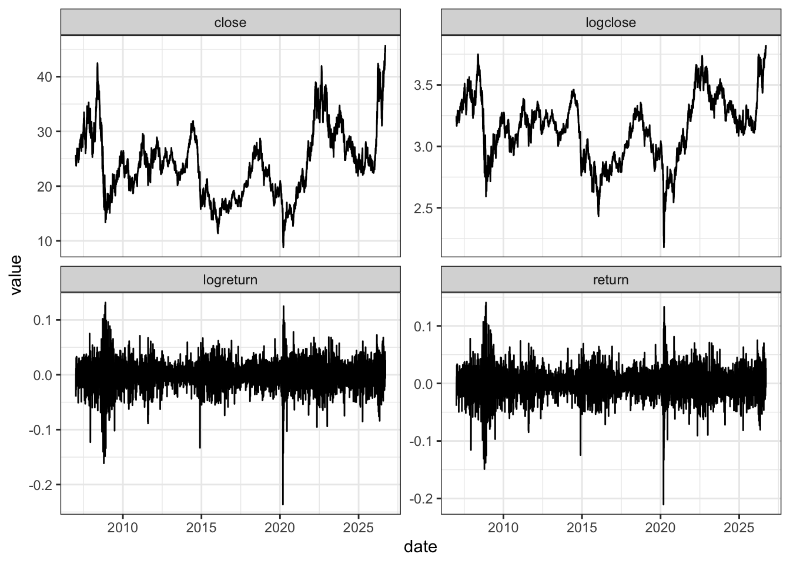
The return series seem to be good alternatives, also for this stock! The Box-Cox transformation seem to take away some of the trend-cycles in the raw data.
- Use the guerrero feature to select a \lambda for the Box-Cox transformation on the data from the previous exercise.
Solution
# -- Box-cox-transform --
lambda <- close.price %>%
features(close, features = guerrero) %>%
pull(lambda_guerrero)
lambda[1] 0.4662792close.price <- close.price %>%
mutate(boxcox = box_cox(close,lambda))
close.price %>%
autoplot(boxcox) +
labs(y = "",
title = latex2exp::TeX(paste0(
"Transformed Equinor closing price with $\\lambda$ = ",
round(lambda,3))))+
# adding the blue close price
geom_line(aes(y=close), col = 4)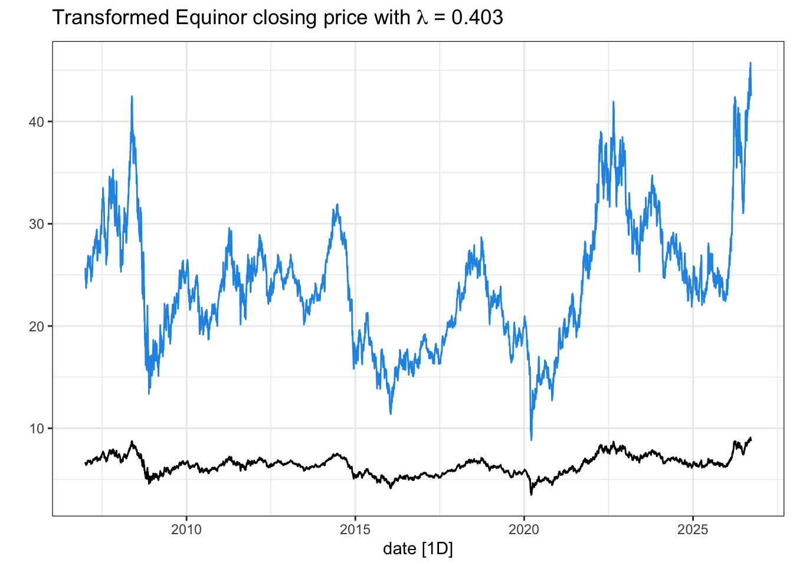
- Implement the additive classical decomposition method for the Norwegian Wholesale and Retails sales index. To adjust the seasonal component to sum to zero, use the following transformation S_t^\star = S_t - |S_t| \cdot \frac{\sum_r S_r}{\sum_r |S_r|} where S_t is the seasonal component before the adjustment and S_t^\star is the adjusted such that \sum_{t}S_t^\star = 0. Compare your results to the output from the function classical_decomposition().
Solution
# Load the data:
wholesale <- readRDS(file= "data/wholesale_and_retails_index_norway.rds")
# Home-made classical decomposition:
classic_decomp <- wholesale %>%
rename(Index = `Wholesale and retail sales index`) %>%
mutate(`12-MA` = slider::slide_dbl(Index, mean, .before = 5, .after = 6, .complete = TRUE),
trend = slider::slide_dbl(`12-MA`, mean, .before = 1, .after = 0, .complete = TRUE), #`2x12-MA` TREND ESTIMATE
detrend = Index - trend,
MONTH = month(yearmonth)
) %>%
group_by(MONTH) %>%
mutate(season = mean(detrend, na.rm=T)) %>% # SEASON ESTIMATE
ungroup()To adjust the seasonal component to sum-to-zero, we update it as S_t^\star = S_t - |S_t| \cdot \frac{\sum_r S_r}{\sum_r |S_r|}.
# Adjust season to sum-to-zero
S <- sum(classic_decomp$season)
A <- sum(abs(classic_decomp$season))
classic_decomp <- classic_decomp %>%
mutate(seasonal = season - abs(season)*S/A) %>%
# Calculate remainder R = Y - T - S
mutate(random = Index - trend - seasonal) %>% # REMAINDER
ungroup() %>%
select(yearmonth, Index, trend, seasonal, random) %>%
mutate(.model = "homemade")
# Plot results:
classic_decomp %>%
pivot_longer(cols =c(-yearmonth,-.model)) %>%
mutate(name = factor(name,
levels = c("Index", "trend", "seasonal", "random"))) %>%
ggplot(aes(x= yearmonth, y = value))+geom_line()+
facet_wrap( ~ name, ncol = 1, scales = "free_y")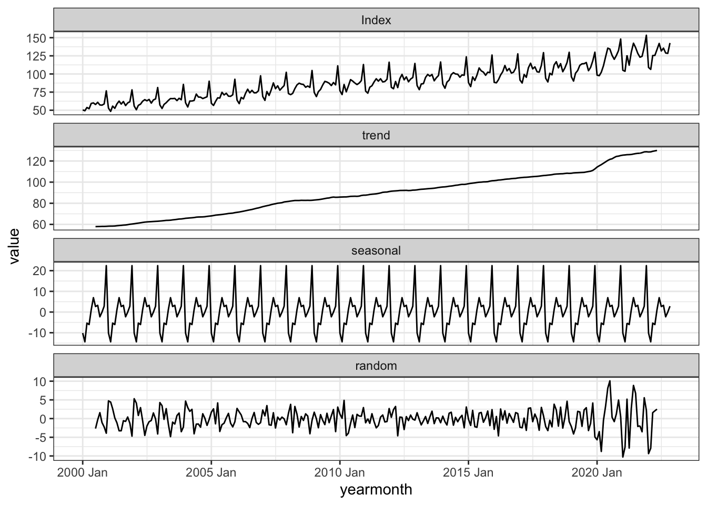
# Let's compare with the automatic one:
wholesale %>%
rename(Index = `Wholesale and retail sales index`) %>%
model(
classic = classical_decomposition(Index)
) %>%
components() %>%
bind_rows(classic_decomp) %>%
autoplot()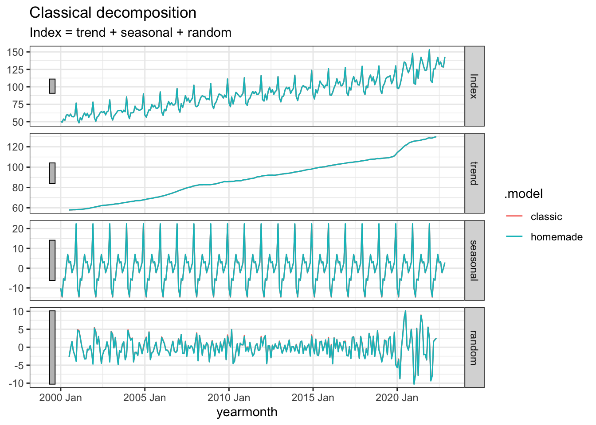
Perfect match!